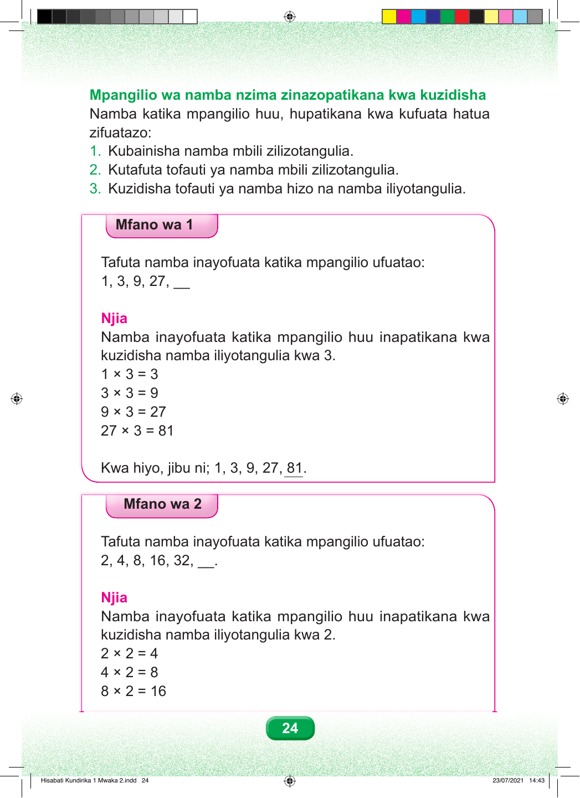

Mpangilio wa namba nzima zinazopatikana kwa kuzidisha Namba katika mpangilio huu, hupatikana kwa kufuata hatua zifuatazo: 1. Kubainisha namba mbili zilizotangulia. 2. Kutafuta tofauti ya namba mbili zilizotangulia. 3. Kuzidisha tofauti ya namba hizo na namba iliyotangulia. Mfano wa 1 Tafuta namba inayofuata katika mpangilio ufuatao: 1, 3, 9, 27, __ Njia Namba inayofuata katika mpangilio huu inapatikana kwa kuzidisha namba iliyotangulia kwa 3. 1 × 3 = 3 3 × 3 = 9 9 × 3 = 27 27 × 3 = 81 Kwa hiyo, jibu ni; 1, 3, 9, 27, 81. Mfano wa 2 Tafuta namba inayofuata katika mpangilio ufuatao: 2, 4, 8, 16, 32, __. Njia Namba inayofuata katika mpangilio huu inapatikana kwa kuzidisha namba iliyotangulia kwa 2. 2 × 2 = 4 4 × 2 = 8 8 × 2 = 16 24 Hisabati Kundirika 1 Mwaka 2.indd 24 23/07/2021 14:43